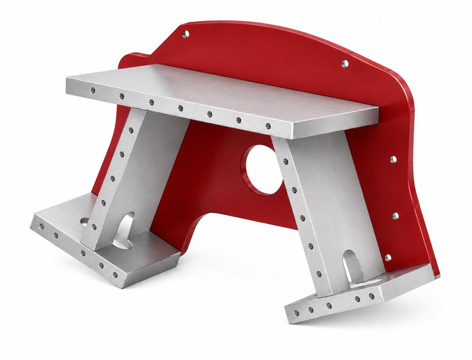
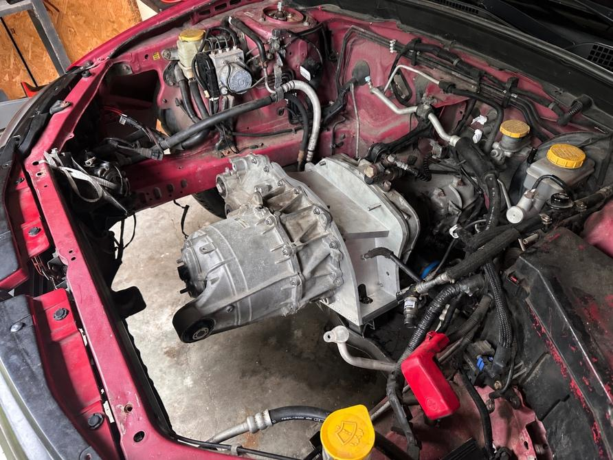
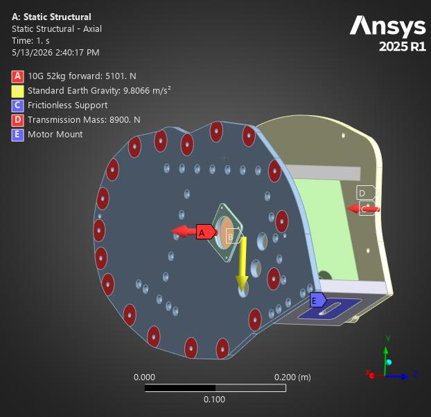
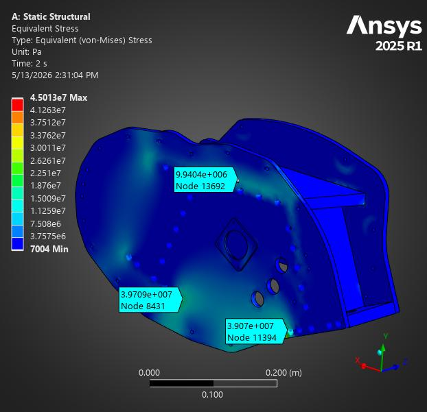
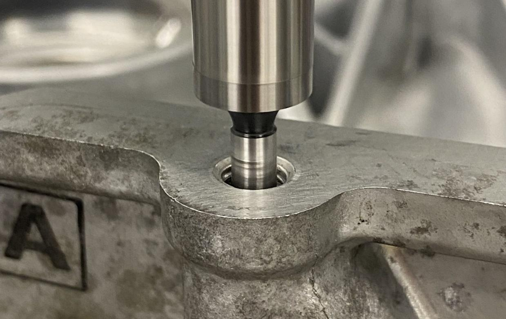
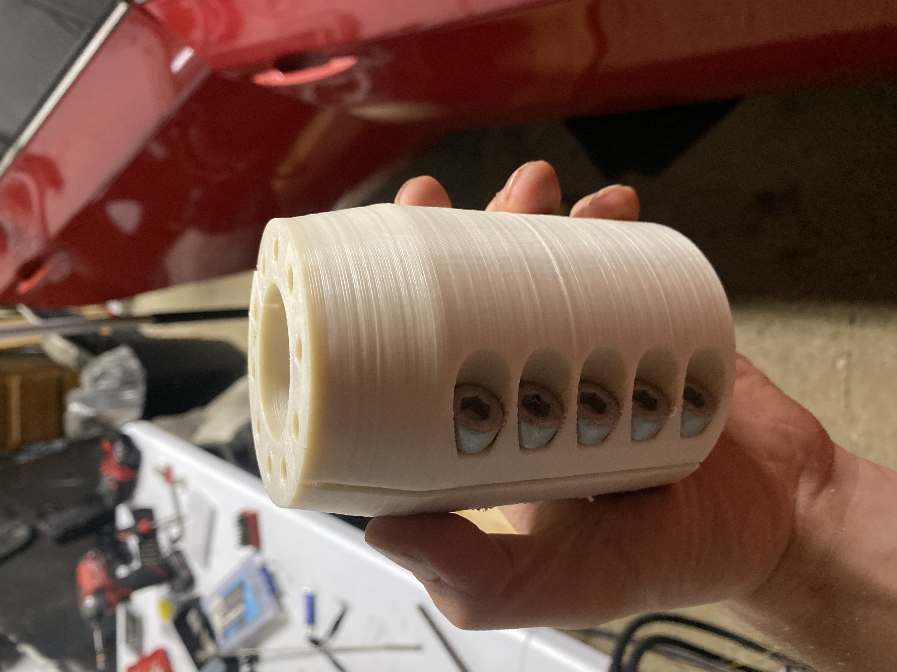

Electric Vehicle Conversion
Mechanical Design / 2026
Electric Vehicle Conversion
There are millions of gasoline vehicles on the road today. Unfortunately, many end up with blown engines or minor damage and can be had for a very low price. It is possible to bring new life to these vehicles and keep them out of junkyards by installing electric motors in them.
For my undergraduate capstone experience, me and my team developed an engineering process to mount the electric motor from a Tesla Model 3 into an arbitrary gasoline vehicle. Afterward, I pursued the project to find out what else was necessary for a green, cost-effective electric vehicle conversion.







Motor Mount
My undergraduate Mechanical Engineering capstone team worked for 8 months to develop an engineering process and example product to physically mount an electric vehicle motor into a 2008 Subaru WRX. We went through the entire engineering cycle countless times, documenting our choices for donor motor, mounting location, mounting strategy, reverse engineering strategy, failure mode analysis, and manufacturing method.
I made extensive use of ANSYS Finite Element Analysis (FEA) software to model the stresses we could expect in the mounting structure during acceleration, collisions, and hard landings. This helped us to quickly refine the design, keeping cost and complexity down while ensuring safe operation.
Batteries and Electrical
Upon graduating Rose-Hulman, I continued the project. Alongside one of my capstone teammates, I installed the high voltage battery modules from a scrapped 2016 Tesla Model S into the Subaru. Along the way, I learned about high-voltage safety and switching logic and CAN bus communications, and gained experience with rapid prototyping and problem solving.